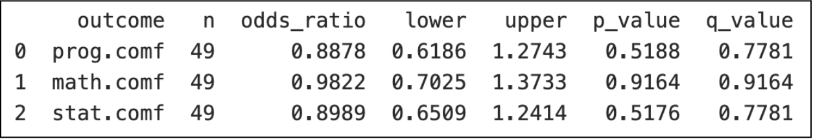
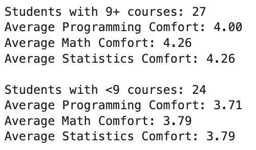

Analysis of class surveys
If you want a subtitle put it here
Use this as a template. Keep the headers and remove all other text. Overall, your report may be quite short. When it is complete, render and then push changes to your team repository.
Executive summary
Write a one-paragraph abstract summarizing what you did and your findings. It need not be comprehensive; try to highlight the most important or interesting outcomes.
Lucas: Half the class has taken 9+ upper division courses. Correlation matrix shows that there are low correlations between upper division course numbers and comfortability in math, stats, and programming, the highest being 0.38 between course number and stats. Clustering: using 5 cluster centroids, we grouped students who’d taken 6+ upper division courses into 2 groups of comfortability between 3.5 and 4 and one above 4. Then for students who’d taken 3-5 upper division courses, we discovered 2 groups of comfortability between 3 and 3.5 and the other above 4. Thus, on average, the clustering results show that we can group students who’ve taken more upper division courses into a category of relatively higher comfortability in math, stats, and programming.
Data description
Write a brief description of the dataset. Your description should cover how data were obtained, sample characteristics, and measurements taken. It does not need to be exhaustive, but sufficiently detailed to convey a clear high-level understanding of the dataset. You can utilize bullet points or tables if you feel it would help improve clarity.
Data were obtained by Google Forms survey that was administered to all students in PSTAT 197A during the Fall of 2025.
Questions of interest
Indicate the questions your analysis addresses. These should map one-to-one to your findings. Don’t include questions you didn’t answer or questions you started with and refined later. If you would rather frame them as goals or tasks rather than questions that is okay; just modify the header appropriately. However you frame what you’ve done, you may only have two or three items; that is fine. Provide an itemized or numbered list so that the reader can easily identify your objectives.
For example:
We sought to understand the relationship between coursework preparation, self-assessed technical abilities, and comfort level with technical skills. We also sought to understand whether the relationships differed depending on having had prior research experience. Our analysis addressed three questions:
- How should the coursework histories of students in the class be ordered from less preparation to extensive preparation?
- Is coursework preparation associated with increased self-assessed technical skill and comfort within the sample?
- Does prior research experience appear to be a substitute for coursework preparation with respect to self-assessed technical skill and comfort?
Notice that the questions are precise but not overly technical.
Findings
When examining the relationship between domain interests and comfort levels, we found that those most comfortable with programming tend to be interested in ecology, biology, economics/accounting. Comfort with math is most associated with interest in economics/accounting, music & audio, and public health. Finally, those most comfortable with statistics are interested in music & audio, biology, and public health.
No statistically significant differences were found in comfort across domains, implying that there is no connection between domain interest and comfort in math, programming, and stats. This could be because students in the capstone program are already comfortable in these fields and likely apply because they have experience in them.
Exploring the second question, we used an ordinal logistic regression model to test the null hypothesis that the number of domains a student is interested in has no association with their comfort (1–5) in programming, math, or statistics.
The odds ratios for all three subjects were near 1 (programming/statistics slightly < 1), all 95% confidence intervals included 1, and all q values (FDR-adjusted (Benjamini–Hochberg) p-values) were > 0.05. Thus, we found no significant evidence of the alternative and we did not detect a statistically significant association between the number of interested domains count and comfort levels in any subject.
[insert bahaar’s conclusions here]
These results are consistent with Question 1, which also found no statistically significant link between domain interest and comfort in programming, math, or statistics.
To answer our question about grouping students by the number of upper division courses they’ve taken and their comfortability in math, statistics, and programming:
Using 5 cluster centroids, we grouped students who’d taken 6+ upper division courses into 2 groups of comfortability between 3.5 and 4 and one above 4. Then for students who’d taken 3-5 upper division courses, we discovered 2 groups of comfortability between 3 and 3.5 and the other above 4. Thus, on average, the clustering results show that we can group students who’ve taken more upper division courses into a category of relatively higher comfortability in math, stats, and programming. This intuitively makes sense, because as students complete more upper division coursework in math, statistics, and programming they would tend to feel more comfortable with those subjects. It’s important to note that the clusters we’ve found do not imply causation, and that the silhouette score of the clustering, 0.29, was relatively close to 0, not indicating the strongest clustering configuration. Furthermore, correlations between the number of upper division courses taken and comfortability were relatively low (the highest being 0.38 between updv.num and statistics comfort).
